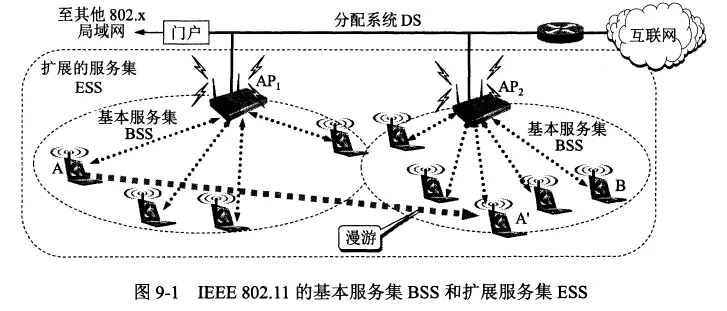
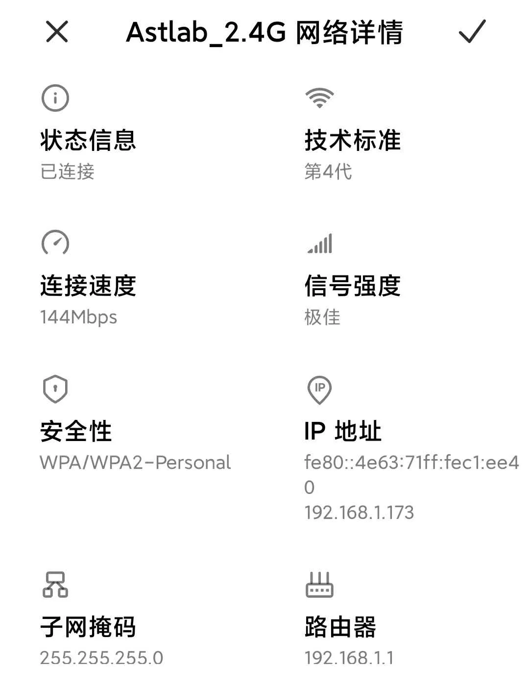
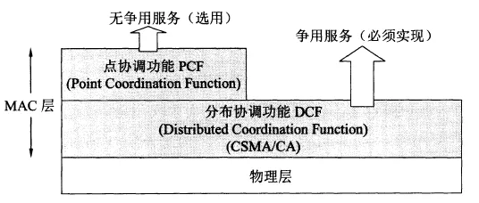
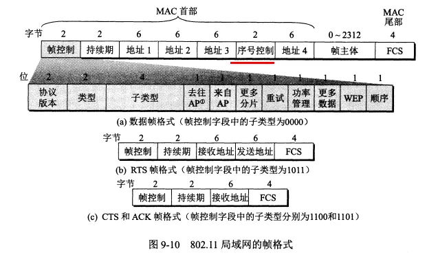
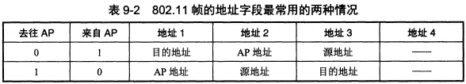
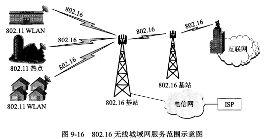
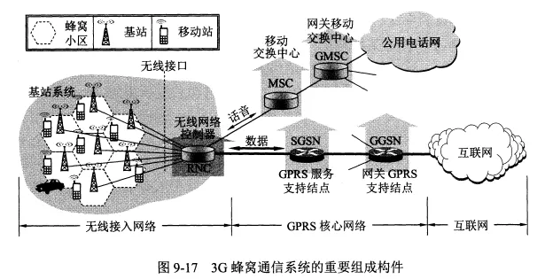
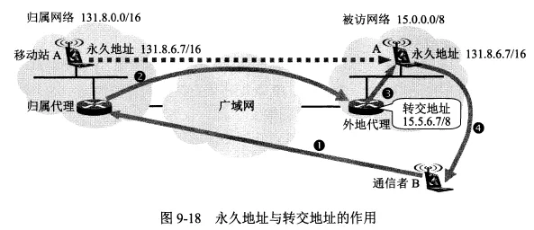
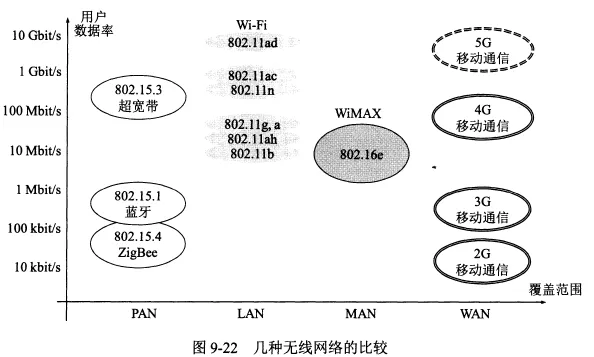

无线网络和移动网络
- TAGS: Network
无线局域网WLAN
无线局域网：Wireless Local Area Netwrok (WLAN)。
无线局域网的组成
无线局域网可以分为两大类:
- 有固定基础设施的无线局域网：使用了预先建立起来的基站覆盖一定范围的固定地址，比如蜂窝移动通信网使用了电信公司建立的固定基站。
- 有固定基础设施的无线局域网采用的是 802.11系列协议。
- 无固定基础设施的无线局域网：移动自组网络，比如蓝牙。
802.11
- 无线以太网的标准是 802.11 系列协议，使用 802.11 系列协议的局域网又称 Wi-Fi。
- 理解：WLAN 表示无线局域网，Wi-Fi 表示采用 802.11 系列协议的局域网，因此 Wi-Fi 是一种局域网，且属于无线局域网。Wi-Fi 实际上已经成了 WLAN 的代名词。
- 802.11 无线以太网标准是用星形拓扑，其中心叫做接入点 AP，在 MAC 层使用 CSMA/CA 协议和停止等待协议。
- 802.11 规定无线局域网的最小构件是基本服务集 BSS。一个 BSS 包括一个基站和若干个移动站，接入点 AP 就是 BSS 内的基站。
- 所有的站在本 BSS 以内都可以直接通信，与其他站通信则要通过接入点 AP。
- 每个 AP 都有一个分配的名字，称为服务集标识符 SSID，它其实就是使用该 AP 的无线局域网的名字（也就是 wifi 名字）。
- 理解：日常说的 wifi 路由器其实就是接入点 AP，而接入点 AP 本身就是一种用于 wifi 的路由器。
- 一个 BSS 所覆盖的地理范围叫做一个基本服务区 BSA，直径一般不超过 100m。
- 一个 BSS 可以是孤立的，也可以通过接入点 AP 连到分配系统（DS）。
AP 与 AP 之间的连接是有线的。

- 当一个移动站（如上图中的 A）从一个服务集漫游到了其他服务集的范围，就要选择一个接入点 AP 与之建立关联，建立关联后加入该 BSS。
- 移动站关联 AP 后，要通过该 AP 向该子网发送 DHCP 发现报文以获取 IP 地址。这之后，移动站就作为该 AP 子网的成员加入到了网络中
- 移动站（手机、平板电脑等）通常选择信号最强的 AP 来连接，但是一个 AP 提供的信道是有限的，如果已经耗尽了，就只能连接其他 AP。
- 移动站与 AP 间通信采用的协议就是 802.11 协议。
- 现在的手机和电脑上都有内置的无线局域网适配器，它能够实现 802.11 的物理层和 MAC 层的功能。
- 现在的无线局域网一般采用了加密方案 WPA 或 WPA2，这时要加入该无线局域网就要输入密码。
移动自组网络
- 无固定基础设施的无线局域网叫做移动自组网络。蓝牙就是一种自组网络。
- 移动自组网络没有基站，而是由一些处于平等状态的移动站相互通信组成的临时网络。
- 自组网络一般不和外界的其他网络相连接。
- 无线传感器网络 WSN 是一种近年来发展很快的移动自组网络。它由大量传感器结点通过无线通信技术构成。物联网 IoT 就是 WSN 的应用领域。
802.11局域网的物理层
802.11 无线以太网标准是用星形拓扑，其中心叫做接入点 AP，接入点 AP 就是基本服务集内的基站。
wifi 的历史版本
- 2020年6月正式发布的 wifi6 的标准是IEEE 802.11ax，又称HEW（High Effieciency WLAN），wifi6 标准支持1GHz 到 6GHz 的所有 ISM 频段，包括 6GHz 和目前使用的 2.4GHz 和 5GHz，向下兼容 a/b/g/n/ac。包含多种带宽，其中最高带宽为 160MHz,数据速率为单条流最高1201Mbit/s

第 4 代 wifi 是 802.11n，第 5 代 wifi 是 802.11ac
802.11局域网的MAC层协议
区分 CSMA/CA 协议和 CSMA/CD 协议：
- CSMA/CA：载波监听多点接入/碰撞避免
- CSMA/CD：载波监听多点接入/碰撞检测
802.11 无线以太网在 MAC 层使用 CSMA/CA 协议和停止等待协议。
使用停止等待协议是因为无线信道的通信质量远不如有限信道，要使用停止等待来保证可靠传输。
无线局域网中不能使用 CSMA/CD 协议，因为：无线局域网中不是所有的站点都能听见对方，因此无法实现碰撞检测。使用 CSMA/CA 协议是为了减小碰撞发生的概率。
802.11 的 MAC 层协议通过协调功能来确定基本服务集 BSS 中的各移动站在什么时间发送和接收数据。
它包括两个子层
- 分布协调功能 DCF：DCF 不采用中心控制，它在每一个结点使用 CSMA 机制的分布式接入算法，让各个移动站通过争用信道来获取发送权。
- 点协调功能 PCF：PCF 是选项，它用接入点 AP 集中控制整个 BSS 内各移动站的活动，使用类似探询的方法将发送数据权轮流交给各个站，以避免碰撞发生。对时间敏感的业务应该采用 PCF。

802.11 无线局域网中的 MAC 帧首部有一个持续期字段，它指出在本帧结束后还要占用信道多少时间。
802.11 标准允许要发送数据的站对信道进行预约，即在发送数据帧之前先发送 RTS 帧请求发送，收到响应允许发送的 CTS 帧后，就可发送数据帧。
802.11 采用了几种机制：
- 帧间间隔时间：所有的站在完成发送后，必须再等待一段帧间间隔时间才能发送下一帧。不同优先级的帧具有不同的帧间间隔 IFS。这可以降低碰撞概率
- 虚拟载波监听：源站把要占用信道的时间通知给其他所有站，其他站在这段时间就停止发送（其他站实际上没有监听，因此叫做虚拟载波监听），这可以降低碰撞概率。
- 随机退避算法：当某个站发现信道变为空闲时，要等待一个 DIFS 的间隔，再执行退避算法，维护一个退避计时器，计时器归零后就立即发送。这样也可以降低碰撞概率。
- 预约机制：要发送数据的站对信道进行预约，即在发送数据帧之前先发送 RTS 帧请求发送，收到响应允许发送的 CTS 帧后，就可发送数据帧。预约帧中会指明预约时间，期间其他站不会再发送数据。用户可以选择性使用预约机制。
802.11局域网的MAC帧
802.11 的 MAC 帧有三种类型：控制帧、数据帧、管理帧。

MAC 帧的首部有 30 字节，尾部是 4 字节的帧检验序列。
802.11 数据帧的地址
802.11 数据帧有4个地址字段。地址4用于自组网络。
前三个地址的内容取决于帧控制字段中的“去往 AP”和“来自 AP”。

无线个人区域网WPAN
无线个人区域网 WPAN 就是把个人设备用无线技术连起来的自组网络。
WPAN 都工作在 2.4GHz 频段。
无线个人区域网包括：蓝牙系统、ZigBee、超高速 WPAN 等。
无线城域网WMAN
无线城域网 WMAN 可提供最后一英里的宽带无线接入，可以用来代替现在的有线宽带接入。
无线城域网的标准是 802.16 系列协议，它可以覆盖一个城市的部分区域。

蜂窝移动通信网
蜂窝无线通信技术简介
移动通信有多种，如蜂窝移动通信、卫星移动通信等。
蜂窝移动通信网原来属于通信领域，但是现在的蜂窝移动通信网采用了许多 iP 技术，可以支持手机、电脑上网。
蜂窝移动通信是小区制的移动通信，它把整个网络划分成许多小区（也就是蜂窝），每个小区设置一个基站。移动站的通信都必须通过基站完成。
2G 即第二代蜂窝移动通信，带宽为 200kHz，它的代表是 GSM 系统，GPRS 也是 2G 的一种技术。2G 基本只能提供电话和短信服务。
3G 的带宽为 5MHz，并使用了 IP 的体系结构和混合的交换体制（电路交换和分组交换），3G 以后的蜂窝移动通信就是以传输业务为主的通信系统了。
3G/4G 时代诞生了上网卡，上网卡像一个 U 盘，可以插到电脑的 USB 接口上，然后电脑就可以通过 3G/4G 蜂窝移动网络接入互联网。
使用蜂窝移动通信是与同一个蜂窝小区的其他用户共享带宽的，每个用户实际分配到的带宽是不确定的。
小区的组成像蜂窝一样，每个基站的发射功能要能够覆盖本小区，又不会太大以至干扰邻近小区。采用蜂窝结构可以最大化频分复用，每个基站使用不同的频率。
3G 通信网络的构件
- 无线网络控制器 RNC 控制一组基站，基站通过 RNC 连接到移动交换中心 MSC，MSC 控制所有 RNC 的话音业务，MSC 可以通过网关移动交换中心连接到公用电话网。
- RNC 还连接到 GPRS 核心网络，当移动站要上网，就通过 GPRS 来进行。
- RNC 处于无线接入网的边缘，它进行无线通信和有线通信的转换。在有线通信这边，RNC 把电路交换的话音通信传送到 MSC，把分组交换的数据传送到 GPRS。

移动IP
概念
- 当计算机移动到外地，移动 IP 技术允许该计算机仍保留原来的 IP 地址。
- 移动 iP 与 DHCP 的区别：当用户带着电脑换了个位置，离开了原来的网络，通过 DHCP 协议就可以自动获取所需的 IP 地址。而移动 IP 用于在移动中上网
- 移动 IP 使用了一些新概念：永久地址、归属地址、归属网络、被访网络、归属代理、外地代理、转交地址、同址转交地址等。
- 移动 IP 使用了几种协议：移动站到外地代理的协议、外地代理到归属代理的登记协议、归属代理数据报封装协议、外地代理拆封协议等。
实现
- 一个移动站必须有一个原始地址，即归属地址（又称永久地址），移动站原始连接到的网络叫做归属网络。
- 移动 IP 通过使用代理来让地址的改变对互联网的其他部分是透明的。归属代理通常就是连接在归属网络上的路由器。
- 当移动站 A 移动到另一个地点，所接入的网络叫做外地网络（又叫被访网络），被访网络中中使用的代理叫外地代理，通常是连接在被访网络上的路由器。
外地代理负责两件事：
- 为移动站 A 创建一个临时的地址：转交地址。转交地址的网络号与外地网络一致。
- 及时把移动站 A 的转交地址通知 A 的归属代理。
注意：转交地址供移动站、外地代理、归属代理使用，各种应用程序都不使用转交地址。转交地址也不具有唯一性，外地代理向移动站 A 发送数据时不使用地址解析协议 ARP，而是用移动站 A 的 MAC 地址。
有时移动站本身也可以作为外地代理。
一个通信的例子
- 一个通信者 B 要与移动站 A 进行通信，其步骤如下：
- B 发送给 A 的数据报目的地址是 A 的永久地址，它被 A 的归属代理所截获。
- 归属代理把 B 发来的数据报再封装（使用了隧道技术），新的数据报的目的地址是 A 现在的转交地址，它被发送给被访网络中的外地代理。
- 外地代理把收到的数据报拆封，取出 B 发送的原始数据发送给 A。A 收到 B 的数据报后也就知道了 B 的 IP 地址。
- 如果 A 要回复 B，就使用自己的永久地址作为源地址，用 B 的 IP 地址为目的地址发送数据报。这时不再需要通过 A 的归属代理。

移动 IP 使用了几种协议：
- 移动站到外地代理的登记协议：移动站接入到被访网络时，要向外地代理登记，获得临时的转交地址。离开该被访网络时要注销。
- 外地代理到归属代理的登记协议：外地代理向归属代理登记移动站的转交地址。
- 归属代理数据报封装协议：将收到的发给移动站的数据报进行封装，以转交地址为新的目的地址。
- 外地代理拆封协议：收到数据报后拆封并发给移动站。
蜂窝移动通信网中对移动用户的路由选择
移动 IP 的路由选择有间接路由选择和直接路由选择。上述方法就是间接路由选择。直接路由选择需要使用通信者代理和锚外地代理。
移动交换中心维护了两个数据库：
- 归属位置寄存器 HLR：类似归属代理的功能。
- 来访用户位置寄存器 VLR：类似外地代理的功能。
GSM中的切换
略。
无线网络对高层协议的影响
移动站在不同无线网络间漫游时，网络的连接会发生中断。TCP 报文段会频繁丢失，TCP 的拥塞控制会受到影响，缩小拥塞窗口，而实际上网络中并不拥塞。
处理的方法：
- 本地恢复。
- 让 TCP 发送方知道什么地方使用了无线链路。
- 让含有移动用户的端到端 TCP 连接拆成两个互相串接的 TCP 连接：从移动用户到无线接入点一个 TCP 连接，剩下的有线网络使用另一个 TCP 连接。
两种不同的无线上网
蜂窝移动网络的收费采用的是按流量计费
wifi 是通过宽带上网的，宽带入网的收费是根据用户使用的带宽和使用时间收费的。
